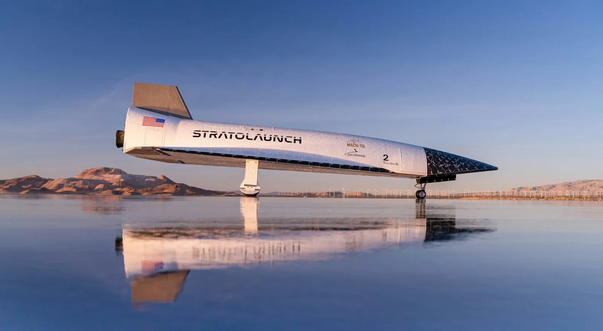

Portfolio / Work experience
Avionics Engineer I, Stratolaunch
Avionics for Talon-A, Stratolaunch's reusable hypersonic test vehicle: from design work and checkouts in the hangar to the avionics console in mission control. July 2025 to present.

Design
I served as avionics design lead on a major rework of Talon-A's payload and vehicle systems.
Flight operations
- Operated the Talon-A avionics console in the mission control center for more than 10 flights, monitoring the vehicle's avionics data in real time.
- Acted as runway recovery lead on more than 5 Talon-A recoveries, relaying information to and from mission control.
- Led pre- and post-flight checkout procedures, LRU checkout procedures, and flight operations procedures.
On the vehicle
I diagnose and fix problems on Talon-A hands-on, with oscilloscopes, DC power supplies, and multimeters. I write and carry out the work orders for vehicle modifications and fixes, and document them in Jira.
Flight data
I've analyzed avionics data from more than 10 flights, and built and presented the data reviews that follow them.
Software
I developed a full-stack application with MongoDB and Next.js that stores and serves the git commits, branches, and software versions flown on each flight, across tens of devices. It keeps software versions uniform across the vehicle and consistently saves more than 3 hours a week.